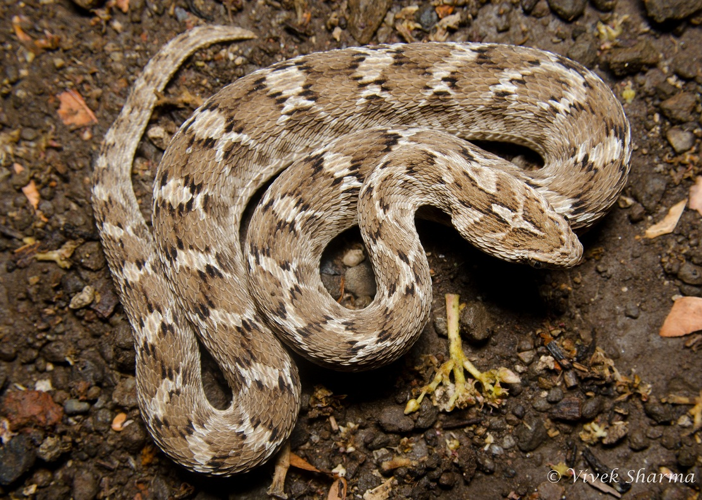
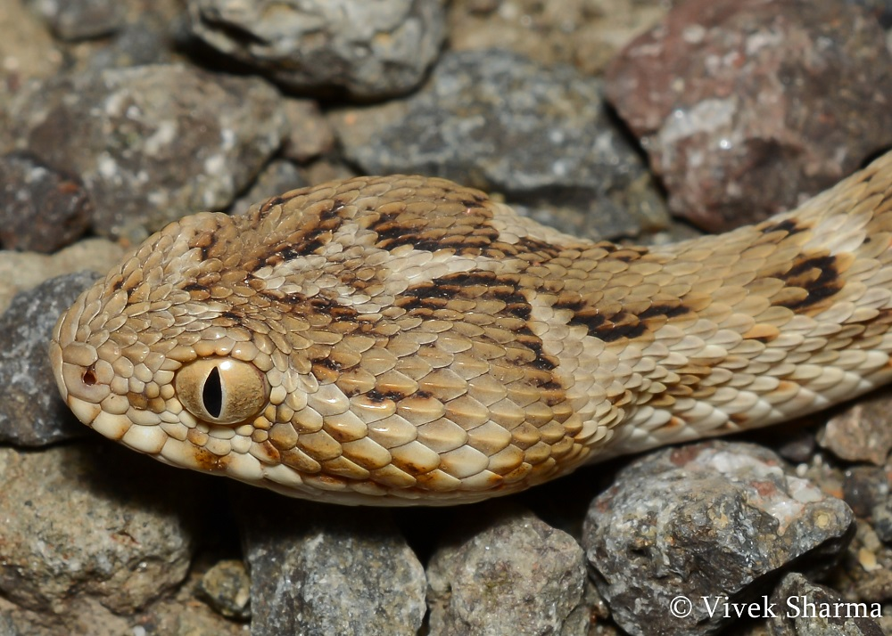
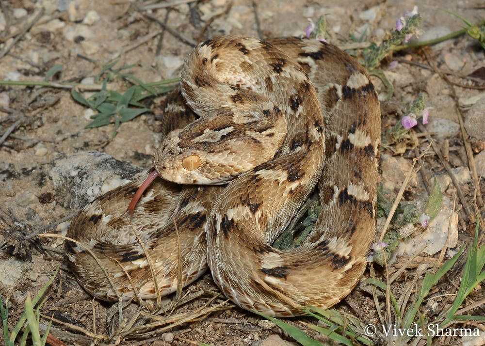
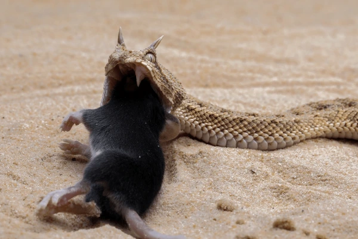

The Chain viper, also known as the Russell's viper (Daboia russelii), is a highly venomous snake found across the Indian subcontinent and Southeast Asia.
It is easily recognized by its distinctive chain-like pattern of dark brown or black oval spots outlined in white along its back.
Commonly seen in grasslands, farmlands, and near human settlements, it primarily feeds on rodents, helping control their populations, but also preys on birds, lizards, and frogs.
The chain viper is known for its aggressive behavior, hissing loudly and striking swiftly when threatened.
Its venom is hemotoxic, causing blood clotting issues, tissue damage, and potentially fatal complications if not treated promptly with antivenom.

Physical Characteristics
The Chain viper (Daboia russelii), also known as the Russell’s viper, has a stout, muscular body with a distinct triangular head that is broader than the neck.
It typically grows between 4 to 5 feet (1.2 to 1.5 meters) in length, though some individuals can be larger.
The snake’s body is covered in keeled scales, giving it a rough texture. Its coloration ranges from yellowish-brown to tan, with a series of dark brown or black oval spots running down its back, bordered by white or yellow, forming a chain-like pattern.
It has large, movable fangs used to inject venom and vertical, cat-like pupils, a common trait in vipers.
The head has two distinct dark patches, and its snout is blunt and rounded.

Habitat
The Chain viper (Daboia russelii), or Russell's viper, is highly adaptable and found in a wide range of habitats.
It prefers open grassy areas, farmlands, scrublands, and bushlands, where it hunts for rodents and other prey.
The snake is commonly found near human settlements due to the abundance of rodents, which often leads to accidental encounters.
It can also be found along the edges of forests, in coastal lowlands, and sometimes in urban areas.
However, it avoids dense forests, extreme deserts, and high-altitude regions like the Himalayas.
Its ability to thrive in diverse environments contributes to its wide distribution and frequent interactions with humans.

Diet and Behavior
The Chain viper (Daboia russelii), or Russell's viper, is highly adaptable and found in a wide range of habitats.
It prefers open grassy areas, farmlands, scrublands, and bushlands, where it hunts for rodents and other prey.
It can also be found along the edges of forests, in coastal lowlands, and sometimes in urban areas.
However, it avoids dense forests, extreme deserts, and high-altitude regions like the Himalayas.
Its ability to thrive in diverse environments contributes to its wide distribution and frequent interactions with humans.

Venom
The venom of the Chain viper (Daboia russelii), also known as the Russell's viper, is highly potent and primarily hemotoxic, affecting blood and tissues.
It disrupts the blood clotting process, leading to internal bleeding, swelling, and tissue damage around the bite area.
Symptoms of envenomation include severe pain, bruising, blistering, low blood pressure, and, in critical cases, kidney failure and multi-organ damage.
The venom also contains components that can affect the nervous system, sometimes causing breathing difficulties and paralysis.
Without prompt medical treatment and administration of antivenom, bites can be fatal.
Interestingly, the venom's ability to affect blood coagulation has made it valuable in medical research for diagnosing blood disorders.